1 OVERVIEW
KEILTM µVision® KEILTM µVision®2, µVision®3, Nuvoton 드라이버를 사용하면 µVision®4 µVision®5 또는 IDE가 Nuvoton 회로 내 에뮬레이션(ICE) 또는 온칩 디버그(OCD) 장치와 통신할 수 있습니다. µVision IDE는 프로그램 실행을 시작 및 중지하고, 중단점을 설정하고, 변수를 확인하고, 메모리 내용을 검사 및 수정하고, 실제 대상 하드웨어에서 실행되는 프로그램을 통해 단일 단계를 수행할 수 있습니다.
KEILTM µVision® 이 문서에서는 C51/A51 컴파일러로 작성된 프로그램과 함께 Nuvoton 8051 KEILTM 드라이버를 설치하고 사용하는 방법을 설명합니다.
KEILTM µVision®은 Nuvoton 자체 CPU 데이터베이스 “Nuvoton 8051 장치”를 제공합니다. 이는 모든 KEILTM µVision® Nuvoton 8051 MCU를 수집하고 사용자가 쉽게 프로젝트를 구축할 수 있도록 해줍니다. ML51, MS51, N76E003, N76E885, N76E616의 경우 해당 헤더 파일은 일반 라이브러리에도 KEILTM이 설치되어 있습니다. 사용자는 다음과 같이 작성하여 직접 포함할 수 있습니다.
파일 위치를 고려하지 않고 “#include < ML51.h 파일 >”.
지원되는 8051 장치를 보려면 하이퍼링크를 엽니다. 링크(8051 시리즈 검색).
2 SYSTEM REQUIREMENTS
- 소프트웨어: KEILTM µVision®2, µVision®3, µVision®4 µVision®5.
- 하드웨어: Nu-Link 인터페이스를 갖춘 평가 보드를 지원합니다.
3 NUVOTON KEILTM µVISION® 드라이버 설치
또는 인터페이스 내부에서 Nuvoton 8051 Driver µVision®2, µVision®3, µVision®4 µVision®5를 실행하는 데 필요한 전체 파일 세트가 패키지에 포함되어 있습니다.
모든 단계는 설치 프로그램에 의해 자동으로 수행됩니다. 아래 단계를 따르십시오.
- 컴퓨터에 C51/A51 컴파일러를 설치합니다.
- Nu-Link_Keil_Driver.exe를 실행한 후 <KEIL 설치 경로>를 선택하세요. Hnew 파일은 <KEIL 설치 경로>\C51\BIN\ Nuvoton_8051_KeiL_uVision_Driver.DLL 내에 나타납니다.
- 최신 Nu-Link Keil 드라이버는 다음 웹페이지에서 다운로드할 수 있습니다:
http://www.nuvoton.com/hq/support/tool-and-software/ide-and-compiler/
4 µVISION® 인터페이스로 작업 시작
4.1 새 프로젝트 만들기
새 프로젝트를 생성하려면 아래 단계를 따르세요.
1단계: 프로그램을 실행하고 "Project – New µVision Project"를 호출하여 Create New Project 양식을 엽니다.
2단계: 새 프로젝트 이름을 입력하고 "저장" 버튼을 클릭합니다.
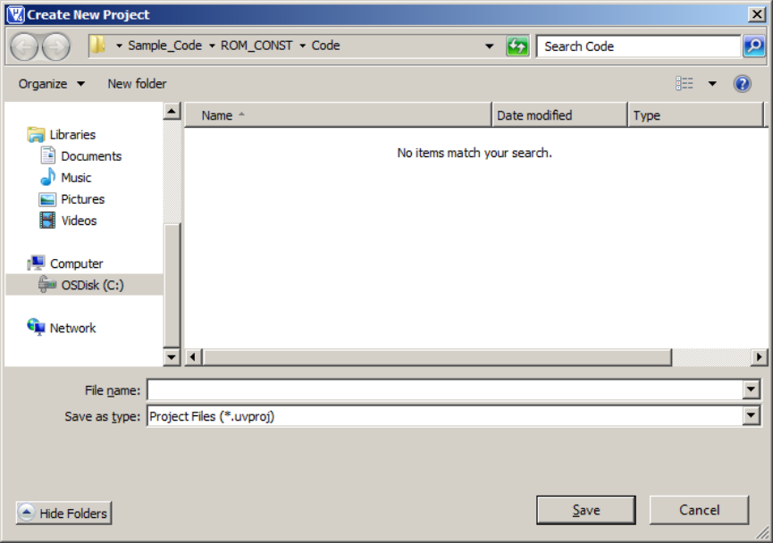
3단계: "Nuvoton 8051 장치"를 선택하고 "확인" 버튼을 클릭합니다.
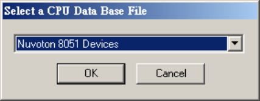
4단계: 장치를 선택합니다.
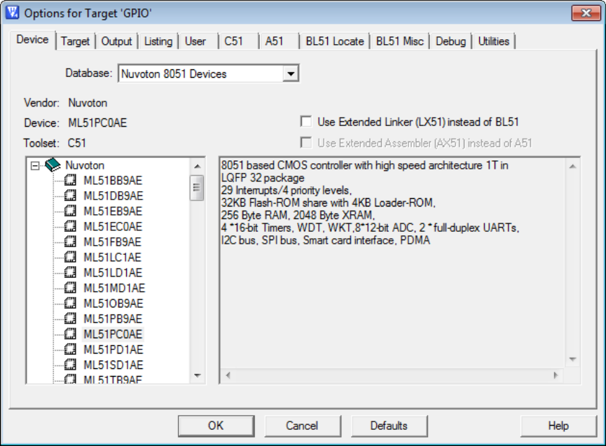
5단계: "예"를 클릭하여 "STARTUP.A51"을 프로젝트 폴더에 복사하고 흐름을 완료합니다(그림 4-5 참조).
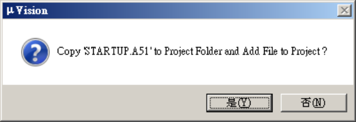
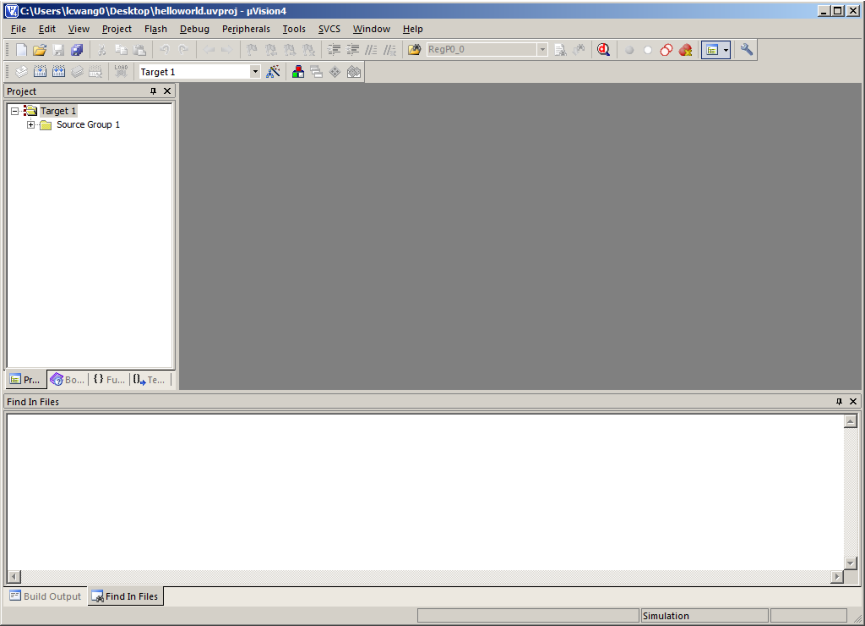
4.2 디버그 옵션 설정
디버그 옵션을 설정하려면 아래 단계를 따르세요.
1단계: "대상 옵션" 양식에서 디버그 탭을 선택합니다.
2단계: '사용:' 옵션이 선택되어 있는지 확인하세요.
3단계: "Nuvoton 8051 KEIL µVision 드라이버"를 선택합니다.
4단계: 아래 그림과 같이 옵션을 설정합니다.
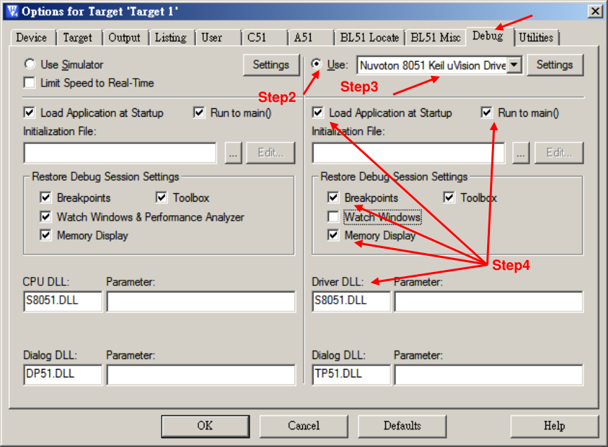
5단계: "대상 옵션" 양식에서 유틸리티 탭을 선택합니다.
6단계: "플래시 프로그래밍용 대상 드라이버 사용:" 옵션이 선택되어 있는지 확인합니다.
7단계: "Nuvoton 8051 KEIL µVision 드라이버"를 선택합니다.
8단계: “설정” 버튼을 클릭하세요.
9단계: Flash 다운로드 설정 양식에서 모든 옵션을 확인합니다.
10단계: “확인”을 클릭하고 설정을 완료합니다.
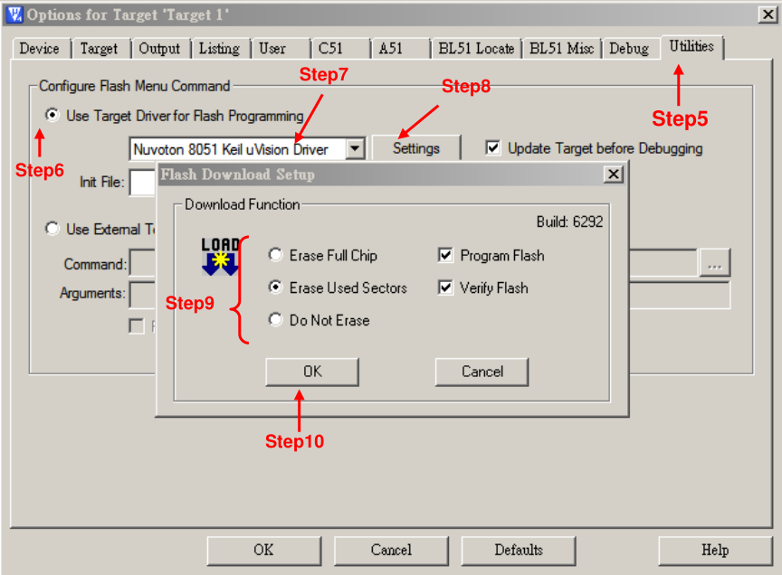
5 디버그 기능 사용
이 장에서는 예제 프로젝트를 기반으로 Nuvoton 8051 Driver를 8051 C51/A51 애플리케이션과 함께 사용하는 방법을 설명합니다.
5.1 새 프로젝트 디버깅
설치를 수행한 후 아래 단계를 따르십시오.
1단계: "파일 – 새로 만들기"를 호출하여 새 파일을 만들고 C 언어로 저장합니다.
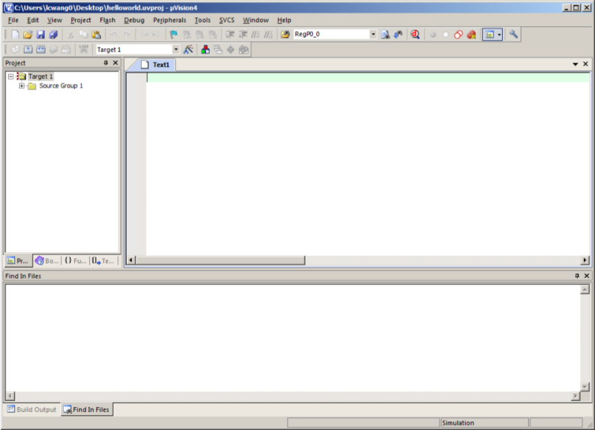
2단계: 그림 5-2와 같이 샘플 코드를 작성하고 저장합니다.
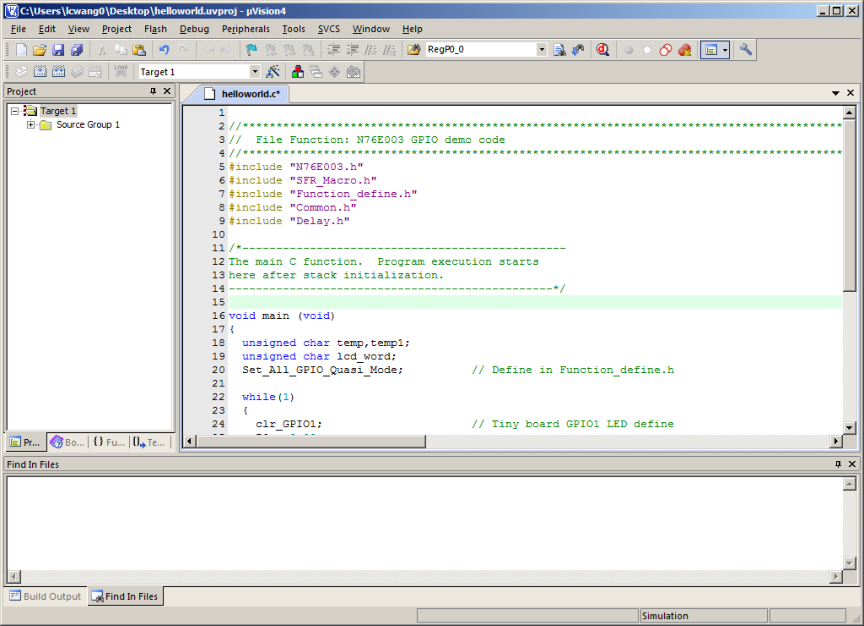
3단계: "프로젝트 - 관리 - 구성 요소, 환경, 책"을 호출합니다. Step–2를 통해 생성된 C 파일을 추가합니다.
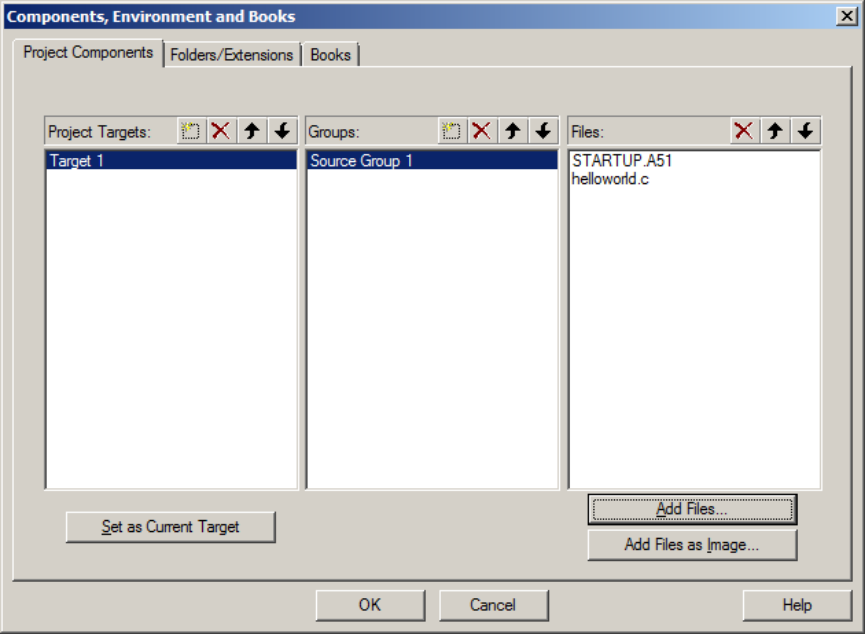
4단계: "모든 대상 파일 다시 빌드"를 호출하여 프로젝트를 빌드합니다. 빌드 출력 창에 경고 및 오류가 표시되지 않는지 확인하세요.
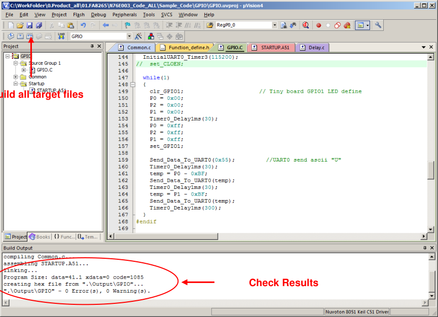
5단계: “다운로드”를 클릭하여 코드를 플래시 메모리에 다운로드합니다.
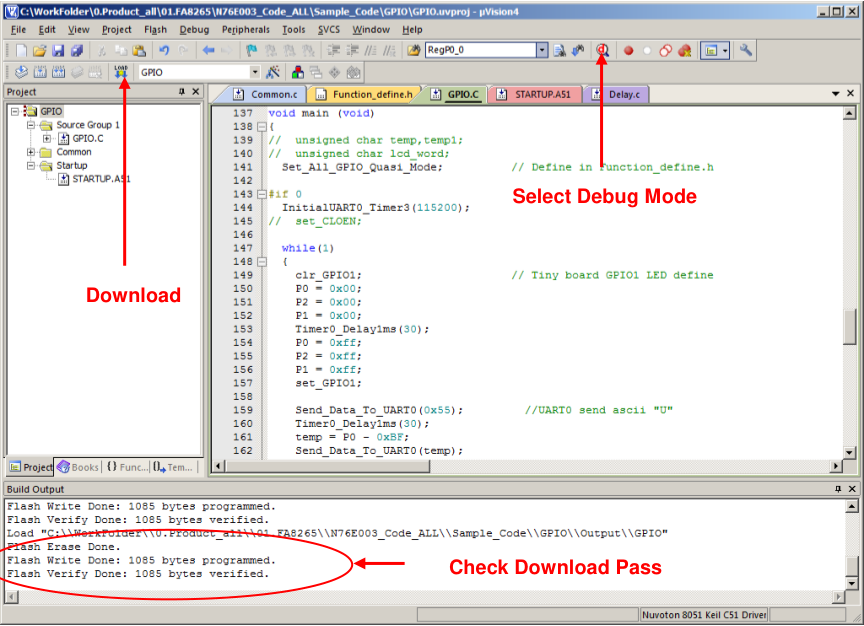
6단계: "디버그 세션 시작/중지"를 클릭하여 디버깅을 시작합니다.
7단계: 자유 실행, 정지 또는 단계별 실행을 선택합니다. 중단점을 설정하거나 삭제할 수 있고 변수를 표시할 수 있으며 메모리 영역을 읽고 쓰거나 수정할 수 있습니다(그림 5-6 참조).
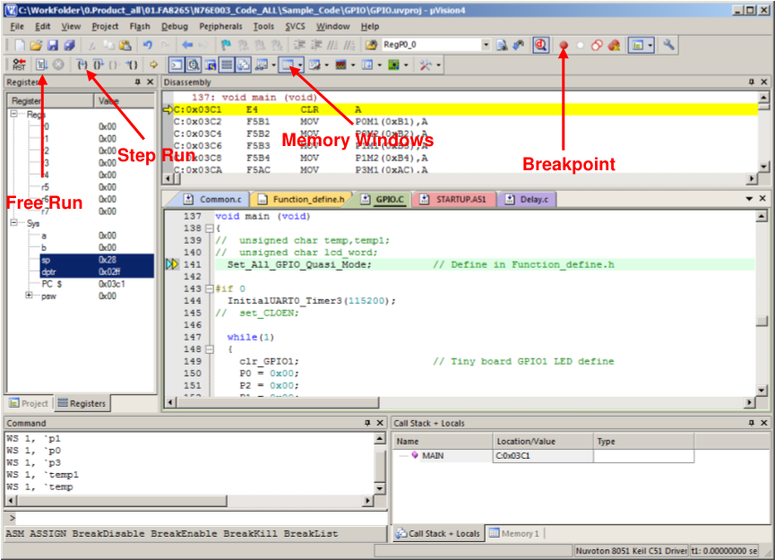
참고: Nuvoton ICE/OCD는 8개의 중단점을 지원합니다. 하나의 중단점은 디버그 명령용으로 예약되어 있으며 나머지 7개의 중단점을 사용할 수 있습니다.
5.2 CONFIG 업데이트
Updating CONFIG
1단계: "대상 옵션" 양식에서 디버그 탭을 선택합니다.
2단계: “설정” 버튼을 클릭하세요.
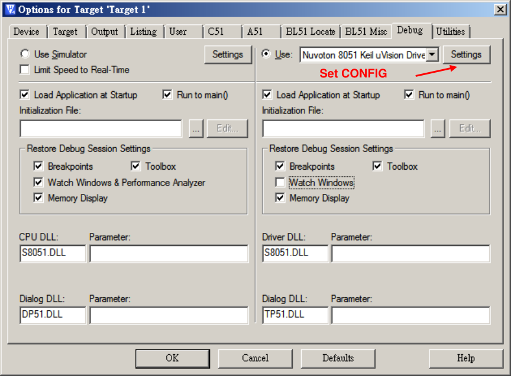
5.2 CONFIG 내용 설정
3단계: CONFIG를 설정하고 "구성 쓰기"를 클릭하세요.
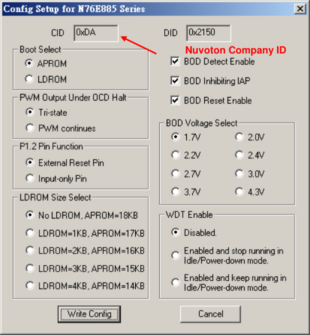
참고:
a. "구성 쓰기"를 클릭한 후 플래시를 다시 다운로드해야 합니다.
b. CID는 "회사 ID"(Nuvoton ID)인 "0xDA"여야 합니다.
c. DID 및 CONFIG 내용은 부품 번호에 따라 다릅니다.
5.3 SFR 읽기 또는 쓰기
디버그 모드에서 메모리 창의 주소 텍스트 필드에 "D: 0x80"을 입력합니다. "D: 0x80"은 SFR 주소가 0x80부터 0xFF까지 시작됨을 의미합니다. SFR은 일반적으로 읽거나 쓰여집니다.
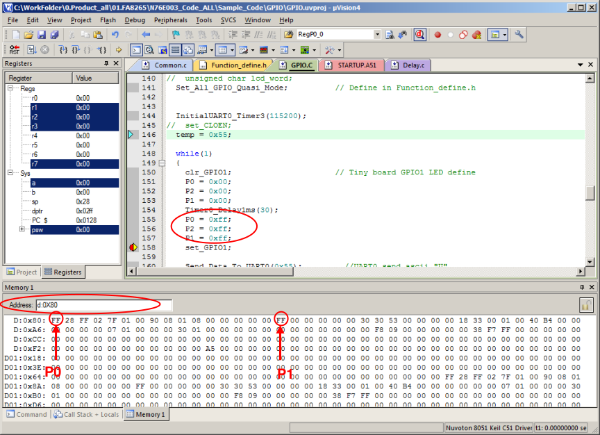
5.4 직접/간접 RAM 읽기 또는 쓰기
디버그 모드에서 메모리 창의 주소 텍스트 필드에 "D: 0x00"을 입력합니다. "D: 0x00"은 직접 RAM 주소가 0x00부터 0x7F까지 시작함을 의미합니다. 직접 RAM을 읽거나 쓸 수 있습니다.
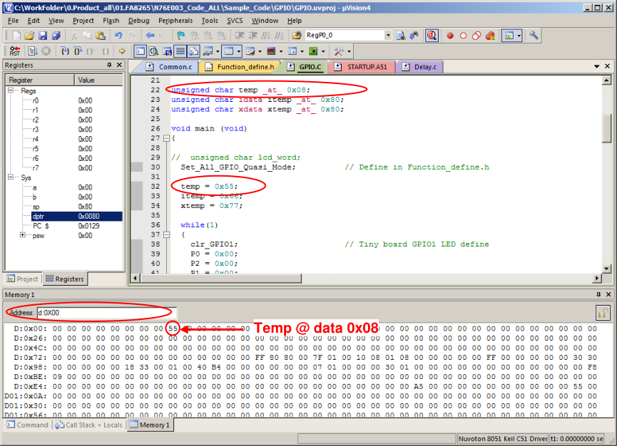
5.5 간접 RAM 읽기 또는 쓰기
디버그 모드에서 메모리 창의 주소 텍스트 필드에 "I: 0x00"을 입력합니다. "I: 0x00"은 간접 RAM 주소가 0x00부터 0xFF까지 시작됨을 의미합니다. 간접 RAM을 읽거나 쓸 수 있습니다.
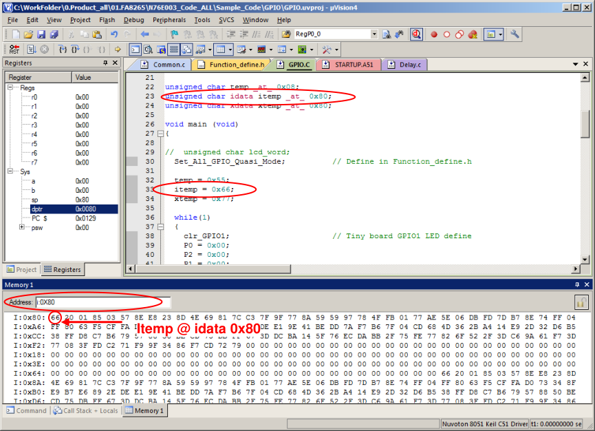
5.6 XRAM 읽기 또는 쓰기
디버그 모드에서 메모리 창의 주소 텍스트 필드에 "X: 0x0000"을 입력합니다. "X: 0x0000"은 XRAM 시작 주소가 0x0000임을 의미합니다. XRAM은 읽거나 쓸 수 있습니다.
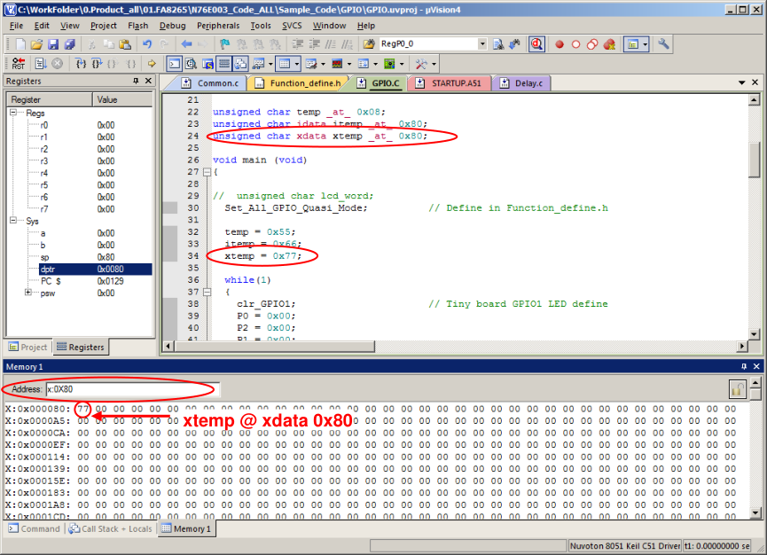
참고: MCU에 XRAM이 없으면 설정이 유효하지 않습니다.
5.7 코드 읽기
디버그 모드에서 메모리 창의 주소 텍스트 필드에 "C: 0x0000"을 입력합니다. “C:0x0000”은 CODE 시작 주소가 0x0000임을 의미합니다. CODE는 읽기 전용입니다. CODE 영역을 읽으면 특히 실행 중에 데이터 플래시 저장소를 사용할 때 디버깅에 도움이 됩니다.
참고: 이 기능은 ML51 시리즈, MS51 시리즈 및 N76 시리즈에 유효합니다.
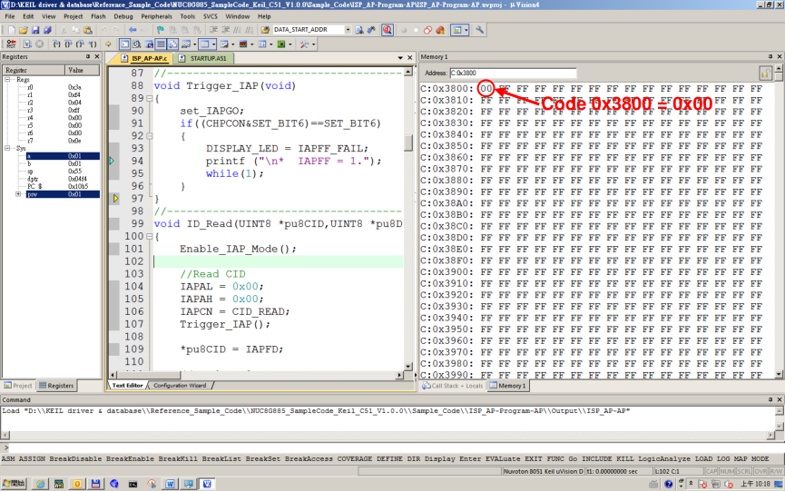
5.8 기타 디버그 설정
대상 MCU가 LIRC 또는 1MHz 미만의 시스템 클록 분배기를 사용하는 경우 ICE 최대 클록을 4kHz로 정의하여 ICE 읽기/쓰기 데이터를 올바르게 확인해야 합니다.
참고: 이 기능은 ML51 시리즈, MS51 시리즈 및 N76 시리즈에 유효합니다.
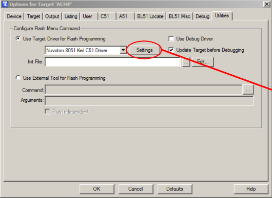
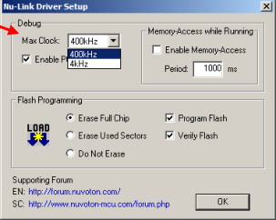
5.9 Timer Clock Keep Run Under OCD Halt
N76E003과 같은 일부 MCU의 경우 CONFIG 설정 지원 PWM은 OCD 정지 상태에서 계속 실행됩니다. 즉, 브레이크 포인트 또는 단계 실행, PWM이 출력을 일반 설정으로 유지하는 경우 이 기능에는 ICE 드라이버 설정 "PCLK 활성화"가 선택되어 있어야 합니다.
참고: 이 기능이 활성화되면 PWM 클록이 계속 실행되고 출력될 뿐만 아니라 모든 이 기능은 ML51 시리즈에 유효하며 타이머에는 타이머 0/1/2/3 및 WKT가 포함됩니다)도 카운트를 유지합니다.
MS51 시리즈와 N76 시리즈.
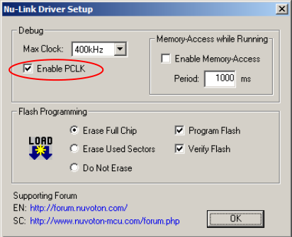
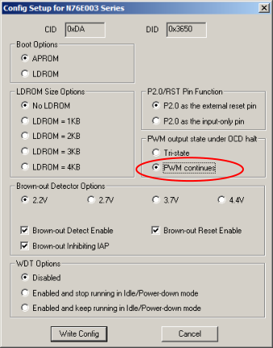
5.10 Memory Access while Runing
메모리 액세스 실행 기능 항목이 있는 드라이버 설정 창은 ICE가 프리런 모드에 있을 때 SFR 및 RAM 값 지원을 의미하며 업데이트를 유지합니다.
고객은 새로 고침 타이밍 기간을 정의할 수 있으며 최소값은 100ms입니다.
다음과 같이 설정하고 디버그 모드에서 "Periodic Windows Update"를 활성화합니다.
참고: 새로 고침 프로세스는 MCU 실행을 중지하고 메모리 창을 업데이트한 다음 MCU를 다시 실행하는 것이므로 이 기능이 ML51 시리즈, MS51 시리즈 및 N76 시리즈에 유효할 때 실제 클럭과 일치하지 않는 일부 타이밍 문제가 발생할 수 있습니다.
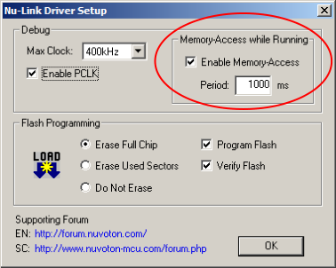
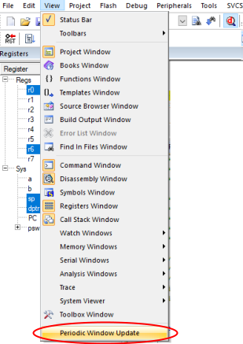
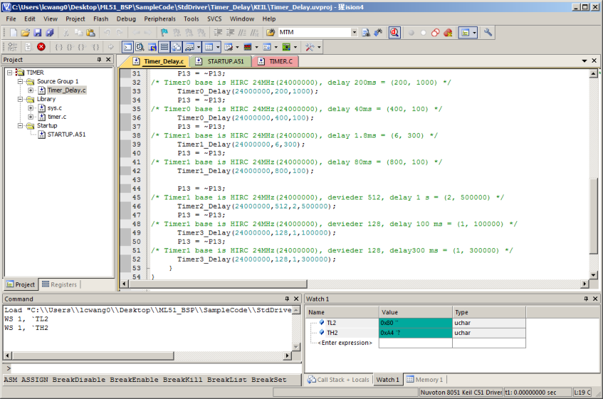
6 프로젝트 작업 흐름
이 장에서는 사용자가 C51 환경에서 디버그 모드를 다운로드하거나 실행하는 흐름을 제공합니다.
6.1 Program Code Download Flow
Step–1: 새 프로젝트를 생성합니다. (그림 4-1 ~ 그림 4-5 참고)
2단계: 디버그 옵션을 설정합니다(그림 4-6 ~ 그림 4-7 참조).
Step–3: 새로운 C 파일을 생성하고 샘플 코드를 작성합니다(그림 5-1 ~ 그림 5-2 참고).
4단계: 프로젝트에 C 파일을 추가합니다(그림 5-3 참조).
5단계: CONFIG를 설정합니다(그림 5-7 ~ 그림 5-8 참조).
6단계: 대상을 빌드하고 결과를 표시합니다(그림 5-4 참조).
7단계: 결과를 다운로드하고 표시합니다(그림 5-5 참조).
6.2 Program Code Debug Flow
1단계: 새 프로젝트를 생성합니다(그림 4-1 ~ 그림 4-5 참조).
2단계: 디버그 옵션을 설정합니다(그림 4-6 ~ 그림 4-7 참조).
3단계: 새 C 파일을 생성하고 샘플 코드를 작성합니다(그림 5-1 ~ 그림 5-2 참조).
4단계: 프로젝트에 C 파일을 추가합니다(그림 5-3 참조).
5단계: 대상을 빌드하고 결과를 표시합니다(그림 5-4 참조).
6단계: 디버그 모드를 실행합니다(그림 5-5 ~ 그림 5-6 참조).
7단계: SFR, 직접 RAM, 간접 RAM 및 XRAM을 읽거나 씁니다(그림 5-9 ~ 그림 5-12 참조).
6.3 Create .bin File
.hex에서 bin 파일을 생성하려면 아래 단계를 따르세요.
1단계: hex2bin.exe가 BSP에 있는지 확인합니다.
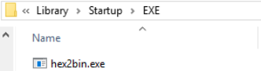
2단계: 다음 설정을 추가합니다.
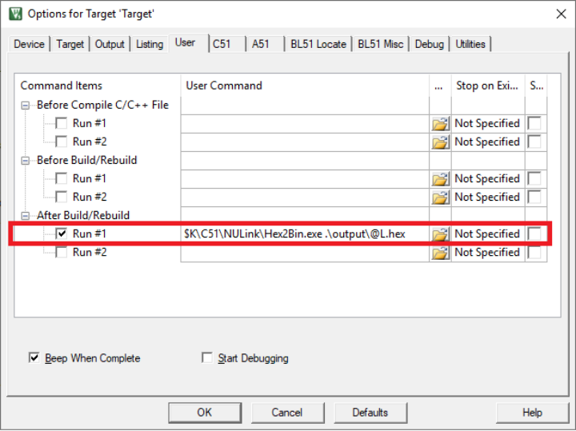
3단계: 인수의 예.
| Command | Description |
|---|---|
$K\C51\NULink\Hex2Bin.exe .\output\@L.hex |
기본적으로 사용되지 않은 위치는 0xFF로 채워집니다. |
$K\C51\NULink\Hex2Bin.exe .\output\@L.hex -P 0x00 |
-P 또는 -p 매개변수로 채울 데이터를 지정합니다. 이 예에서는 00으로 채워집니다. |
$K\C51\NULink\Hex2Bin.exe .\output\@L.hex -p 0xFF |
-P와 동일합니다. 이 예에서는 FF로 채워집니다. |
$K\C51\NULink\Hex2Bin.exe .\output\@L.hex 0x0 0x1000 0xFF80 0x80 |
두 개의 bin 파일을 생성합니다. 사용되지 않은 위치는 0xFF로 채워집니다. 첫 번째 <project>.bin은 0x00부터 생성되고 파일 크기는 0x1000입니다. 두 번째 <project name1>.bin은 0xFF80부터 생성되고 파일 크기는 0x80입니다. |
$K\C51\NULink\Hex2Bin.exe .\output\@L.hex -P 0x00 0x0 0x1000 0xFF80 0x80 |
두 개의 bin 파일을 생성합니다. -P로 지정한 값에 따라 사용되지 않은 위치가 채워집니다. 이 예에서는 00으로 채워집니다. |
4단계: 체크섬 정보
| Output | Description |
|---|---|
>>> [Project Name].bin Checksum = 0xXXXX<<< |
기본 단일 bin 파일 체크섬 형식입니다. |
>>> [Project Name].bin Checksum = 0xXXXX <<< |
사용자가 정의한 범위 기준으로 두 개의 bin 파일을 생성했을 때의 체크섬 형식입니다. |
7 CHECK VERSION
Nu-Link Bridge Firmware Version
ICE/OCD 디버그 도구는 Nu-Link를 브리지 인터페이스로 사용하여 KEILTM 디버그 환경 및 대상 MCU와 통신합니다. Nu-Link의 메인 칩은 Nuvoton NUC12SR MCU입니다. 이 칩에 프로그래밍된 펌웨어 버전은 "유틸리티" 페이지의 "설정"을 클릭하여 "플래시 다운로드 설정" 창에서 확인할 수 있습니다.
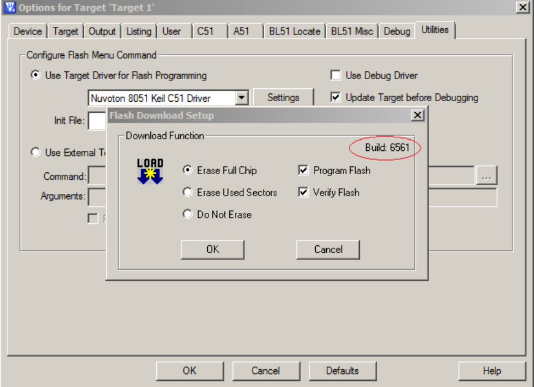
부록 C51 평가판의 제한 사항
KEILTM
현재 제품 라이선스가 없는 KEILTM 개발 도구는 평가판으로 실행되며 다음과 같은 제한 사항이 있습니다.
- 8051 컴파일러, 어셈블러, 링커, 디버거의 개체 코드는 2KB로 제한됩니다. 소스 코드의 크기는 제한되지 않습니다.
- 2KB 이상의 목적 코드를 생성하는 프로그램은 컴파일, 어셈블 또는 링크되지 않습니다.
- 디버거는 2KB 이하의 프로그램을 지원합니다.
- 생성된 시작 코드에는 LJMP가 포함됩니다. 생성된 코드는 2KB 이하의 프로그램 공간을 지원하는 단일 칩 장치에서 사용할 수 없습니다.
- 프로그램은 오프셋 0x0800에서 시작됩니다. 평가 소프트웨어로 생성된 프로그램은 온칩 ROM이 2KB 미만인 단일 칩 장치에 프로그래밍할 수 없습니다.
- 다중 DPTR 레지스터에 대한 하드웨어 지원은 제공되지 않습니다.
- 부동 소수점 연산 및 사용자 라이브러리에 대한 지원이 제공되지 않습니다.
- #pragma ASM을 사용한 인라인 어셈블리는 지원되지 않습니다.
- PK51 정식 버전에 있는 다음 구성 요소는 평가 버전에 포함되지 않습니다: 코드 뱅킹용 링커, 라이브러리 관리자 및 RTX51 Tiny 실시간 운영 체제.